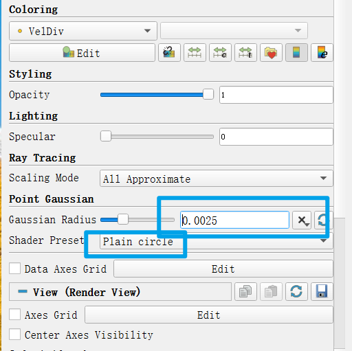

Paraview 保存高分辨率图片¶
本文用于解决以下问题
采用Paraview进行粒子法/网格法模拟后处理，保存高分辨率流场图片
本文不适用于以下情景
对图片分辨率没要求，或者导出数据采用其他软件后处理
对于流场图，通常我们无法将其保存成矢量图，但是又不想损失太多画质；起初我的方法是直接采用一些截图工具截图，发现放大后是全损画质， 后来将数据输出，采用matlab一帧帧画，费事并且matlab三维可视化局限还是太明显了，如果一定要存成矢量图格式可以采用
Paraview是非常强大的可视化工具，直接采用Paraview保存图片也能获得比较高分辨率图片，其实原理和matlab画没啥区别，具体地流程（注意：网格法后处理直接跳到第二步，）：
（1）导入粒子后选择 Point Gaussian，并在左侧属性栏里设置粒子显示尺寸（通常等于0.5dp或者更大）和 显示格式 Plain circle, 也可以尝试其他的，但是我试过几个效果不是很好， 
（2）点击图片上方类似于照相机的按钮，则可以将屏幕保存成PNG格式图片，并且选择分辨率，建议选择高分辨率
（3）基于（2）得到的图片，通常有较大部分白边，可以采用系统自带裁剪工具或者office相关工具裁剪
写在后头：
如果出现需要批量处理的情况下，步骤（2）可以采用paraview录制宏生成python脚本，然后通过运行脚本，谷歌搜关键词 paraview python trace macro
步骤（3）也可以直接采用Python脚本来处理，这样既省事又能保证每张图长宽是固定值
import os
from PIL import Image
def crop_image(input_path, output_path, left, upper, right, lower):
# 打开图像
image = Image.open(input_path)
# 剪裁图像
cropped_image = image.crop((left, upper, right, lower))
# 保存剪裁后的图像
cropped_image.save(output_path)
# 示例用法
input_path = '_press.png' # 输入图像的路径
output_path = 'vemoutput.png' # 输出图像的路径
#找到某个文件下下所有文件
def get_file_names(folder_path):
file_names = []
for file_name in os.listdir(folder_path):
file_names.append(file_name)
return file_names
folder_path = './fig' # 替换为你的文件夹路径
file_names = get_file_names(folder_path)
print(file_names)
#自己确定一下图片边界
left = 995 # 剪裁框的左边界
upper = 495 # 剪裁框的上边界
right = 2845 # 剪裁框的右边界
lower = 1665 # 剪裁框的下边界
for item in file_names:
input_path = "./fig/" + item
output_path = "./fig/after"+item
crop_image(input_path, output_path, left, upper, right, lower)
感谢叶洲腾和殷铭简博士对本文的帮助